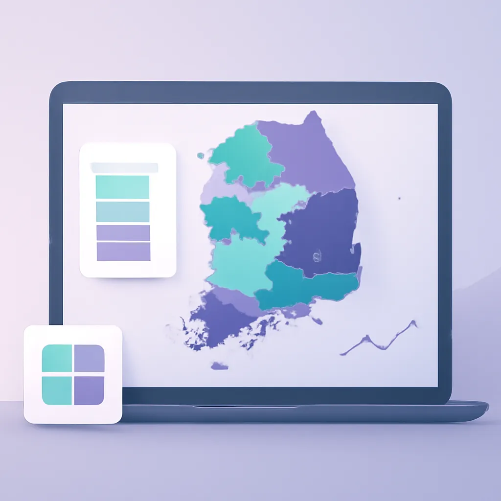

단계구분도(Choropleth) 잘 만드는 법

깊은 공기를 들이마시고, 서울의 미세먼지 농도를 시각화해야 하는 상황을 떠올려 보자. 지역별 대기질 데이터를 단계구분도를 사용해 보여주기로 했다. 일반적인 방법은 데이터를 특정 구간으로 나누고 각 구간에 색을 지정하는 것이다. 하지만 그 데이터가 서울 안의 다양한 지역별로 퍼져 있을 때, 단계구분도는 제대로 정보를 전달할 준비가 되어 있는가?
색상 선정과 의미 전달
단계구분도를 만들 때 가장 먼저 고려해야 할 점은 색상이다. 흔히들 빨간색에서 파란색으로 이어지는 색상 그라데이션을 선택하는데, 실제 현장에서 보면 이런 선택을 자주 보게 된다. 그러나 색은 반드시 의미를 전달할 수 있어야 한다. 예를 들어, 대기질이라면 녹색은 좋은 상태를, 붉은색은 나쁜 상태를 나타내도록 설정해야 한다. 색맹을 고려해 색상을 선택하는 것도 잊지 말아야 한다. 예를 들어, 파란색과 녹색의 구별이 어렵다면 주색과 노란색 같은 색을 사용하는 방안도 고민할 수 있다.
구간 설정의 중요성
구간을 어떻게 나누느냐는 단계구분도의 정보 전달력을 크게 좌우한다. 경험상 많은 보고서에서는 작위적인 다섯 구간을 만들어 사용해왔지만, 이는 데이터의 본질을 흐리게끔 만들기도 한다. 실제 구간 설정은 데이터 분포를 고려해야 한다. 평균은 물론이고, 상하위 25% 범위에서 값을 구간화하면 보다 현실적인 정보를 제공할 수 있다. 이를 위해 '자연 구간 분류'와 같은 알고리즘을 활용하는 것도 방법이다.
데이터의 맥락 이해하기
단순히 단계구분도를 만드는 것으로는 충분하지 않다. 중요한 것은 그 데이터가 실제 세계에 어떻게 적용되는지 이해하는 것이다. 서울의 대기질 정보라면, 특정 날짜의 날씨나 차량 이슈와 연관지어 이해해야 한다. 데이터의 맥락을 잘 파악하고 전달하지 않으면, 아무리 뛰어난 시각화라도 잘못된 인식을 만들 수 있다.
도구 활용과 한계
대부분의 현장에서는 QGIS, Tableau 같은 도구를 많이 사용한다. 각 도구는 장단점이 있다. 예를 들어 QGIS는 오픈소스로 경제적이지만 초기 학습곡선이 가파르다. 그림을 쉽게 편집할 수 있는 반면 데이터의 변화를 실시간으로 반영하기 힘든 경우도 있다. Tableau는 사용자 친화적이고 빠르게 변화를 적용할 수 있지만, 비싸고 커스터마이징에 한계가 있다. 어떤 도구를 선택하든 그 한계를 알고 준비해야 한다.
단계구분도를 만들 때 결국 필요한 것은 데이터 그 자체에 대한 깊은 이해와 색상, 구간, 맥락에 대한 신중한 고민이다. 단순히 색을 칠한 지도를 넘어서 데이터의 이야기를 듣고 말할 수 있어야 최고의 시각화 작업이 완성된다. 데이터가 말하는 이야기에 귀 기울여라. 그러면 데이터가 자연스럽게 말을 걸어 올 것이다.